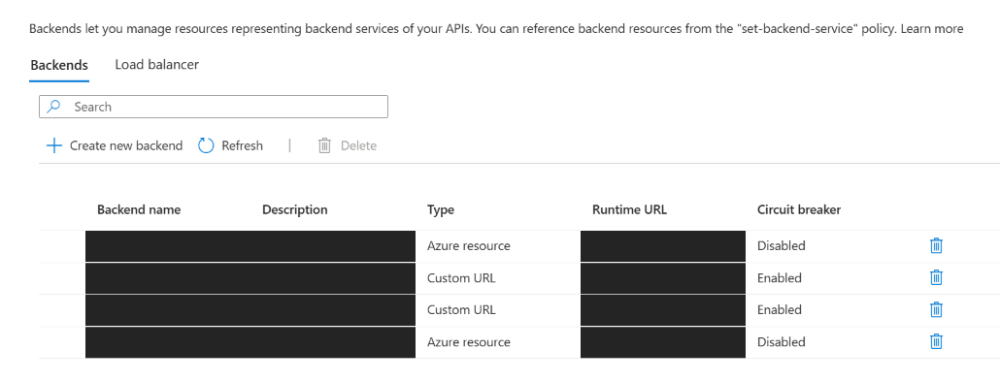
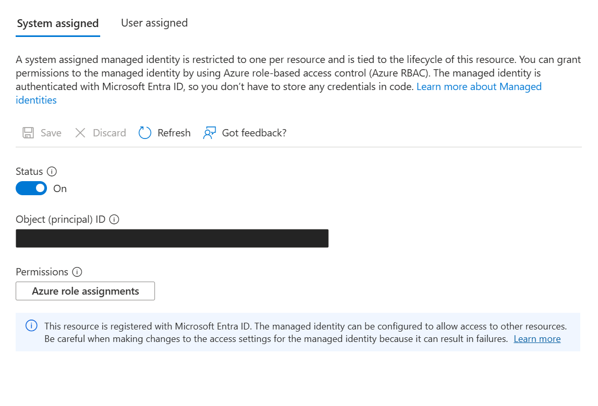
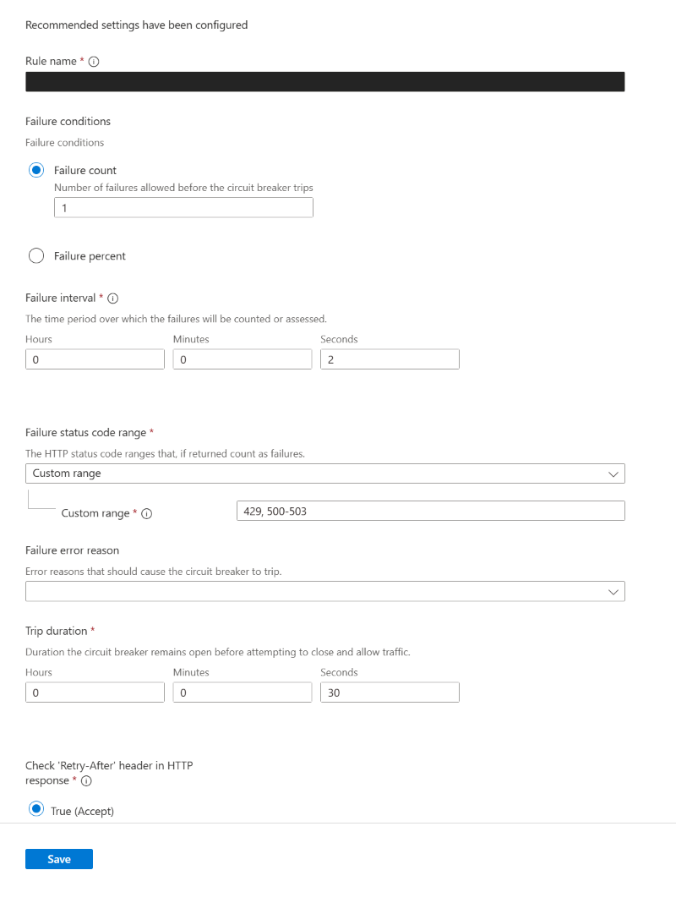

Scope, evidence, and publication boundaries
This article combines the source overview, backend/policy guide, monitoring guide, and companion-resource review for a September 14–15, 2026 proof of concept, documented on September 15. It concerns existing APIM Standard v2 with policies, not the separate dedicated AI Gateway preview tier. It assumes that APIM, Foundry accounts, and networking already exist; it is not a full infrastructure project or automatic deployment package.
The source configured two Single backends with circuit breakers, one pool, inference RBAC for APIM's system-assigned managed identity, one HTTP API with three final operations, and Application Insights logging. Legacy Chat and Responses returned HTTP 200 in recorded user tests; v1 Chat was reported working by the user. A transaction showed backend 1 returning 429 followed by backend 2 returning 200, with final APIM status 200. These are source observations, not tests performed for this publication.
All resource names, subscription and principal identifiers, deployment aliases, hostnames, response identifiers, and environment-specific paths are parameters. YOUR_* values must be replaced before use. Original screenshots and private source links are not published. Do not apply templates to existing production IDs without reviewing ownership, differences, permissions, rollback, and concurrency.
Architecture and prerequisites
Client -- HTTPS + APIM subscription key --> APIM Standard v2
|
Outbound VNet Integration
Managed identity token
|
YOUR_POOL_ID
/ \
YOUR_BACKEND_1_ID YOUR_BACKEND_2_ID
| |
Private Endpoint Private Endpoint
| |
YOUR_FOUNDRY_ACCOUNT_1 YOUR_FOUNDRY_ACCOUNT_2
Same model, version, deployment name and API features- APIM and its integrated VNet are in the same subscription and region. Enable Standard v2 Outbound VNet Integration; an inbound private endpoint alone does not provide backend connectivity.
- Use a dedicated APIM subnet with an NSG and
Microsoft.Web/serverFarmsdelegation. Place Foundry private endpoints in a different subnet, with each account's connection Approved. - Resolve each normal backend service FQDN through APIM's DNS path to the intended private endpoint address. Keep the service FQDN and HTTPS certificate validation; do not call a private IP or substitute a privatelink alias directly as the backend URL.
- All backends must support the same model, model version, deployment name, API behavior, and request parameters. A host-only switch is insufficient if deployments differ.
- Grant APIM's system-assigned managed identity Cognitive Services OpenAI User at each Foundry account scope. Application Insights requires a separate Monitoring Metrics Publisher assignment.
- Client authentication is enforced by APIM. Foundry receives APIM's identity token, not the client's APIM subscription key.
Outbound integration does not make the public APIM entry point private. Foundry private endpoints also do not prove that every inference call used a private path. The source's two accounts were in one subscription; same-tenant cross-subscription design guidance was included, but actual cross-subscription deployment was not established by that PoC. The separately referenced private-endpoint/networking guide was not part of the selected source package and is not silently reproduced here.
Step 1: register individual backends
Find backend resources and their circuit-breaker status

Create each account as a Single backend and attach the circuit breaker to that backend, not to the pool. The downloadable single-backends.json contains two entries. Each uses a host-only HTTPS URL, certificate-chain and certificate-name validation enabled, and this breaker:
{
"properties": {
"type": "Single",
"protocol": "http",
"url": "https://YOUR_FOUNDRY_1_HOST",
"tls": {"validateCertificateChain": true, "validateCertificateName": true},
"circuitBreaker": {
"rules": [{
"name": "throttle-429",
"failureCondition": {
"count": 1,
"interval": "PT1M",
"statusCodeRanges": [{"min": 429, "max": 429}]
},
"tripDuration": "PT1M",
"acceptRetryAfter": true
}]
}
}
}protocol: http is the backend-resource enum; it does not make the HTTPS URL insecure HTTP. One 429 within a 60-second observation period trips the breaker, with a default 60-second duration and Retry-After acceptance. The operation policy supplies the full /openai/... path, so do not duplicate that path in the backend URL.
Both backend JSON files use an array of [resource ID, request body] pairs. The first item is the target ARM ID; only the second item is an individual PUT body. Sending the entire downloaded array as a backend PUT is incorrect. pool.json uses the same envelope even though it contains only one pair.
[
["/subscriptions/YOUR_SUBSCRIPTION_ID/resourceGroups/YOUR_APIM_RESOURCE_GROUP/providers/Microsoft.ApiManagement/service/YOUR_APIM_NAME/backends/YOUR_BACKEND_1_ID",
{"properties": {"type": "Single", "url": "https://YOUR_FOUNDRY_1_HOST"}}]
]
# Envelope illustration only: use the complete downloaded properties object.For manual changes, choose unused backend IDs and inspect them first. After adapting and extracting a single complete request object into YOUR_SINGLE_BACKEND_JSON_PATH, the source's management pattern is:
az rest --method get \
--url "https://management.azure.com/subscriptions/YOUR_SUBSCRIPTION_ID/resourceGroups/YOUR_APIM_RESOURCE_GROUP/providers/Microsoft.ApiManagement/service/YOUR_APIM_NAME/backends/YOUR_BACKEND_1_ID?api-version=2024-05-01" \
--query '{id:id,url:properties.url}' --output json
# Continue only after a successful, explicit ResourceNotFound (404) result.
# A 200 means the ID already exists; choose another ID or review a controlled change.
# A 401, 403, timeout, or network failure does not mean the resource is absent.
az rest --method put \
--url "https://management.azure.com/subscriptions/YOUR_SUBSCRIPTION_ID/resourceGroups/YOUR_APIM_RESOURCE_GROUP/providers/Microsoft.ApiManagement/service/YOUR_APIM_NAME/backends/YOUR_BACKEND_1_ID?api-version=2024-05-01" \
--body @YOUR_SINGLE_BACKEND_JSON_PATH --output noneRepeat for each account. GET followed by PUT is not atomic create-only protection: prevent concurrent configuration changes during this process. The original automation checked a dedicated resource group, ownership description/tags, and existing settings; do not remove those protections to target a different environment. Registering a backend alone does not establish pool routing, API definitions, token forwarding, or successful inference.
Step 2: build the pool and choose a distribution strategy
The source pool referenced both full Single-backend ARM IDs, with priority 1 and weight 1 for each, and no service URL of its own. Register Single backends first, inspect their URL/TLS/breaker/ownership settings, then submit the adapted second object from pool.json to https://management.azure.com/YOUR_APIM_RESOURCE_PATH/backends/YOUR_POOL_ID?api-version=2024-05-01. Here YOUR_APIM_RESOURCE_PATH means the full subscriptions/... service path without an extra leading slash. Use the same explicit-404 and no-concurrent-change safeguards as for Single backends.
| Strategy | Configuration | Behavior and limitation |
|---|---|---|
| Round-robin | Same priority; weights 1:1 | Approximately even request distribution among available members, not exact alternation or even token consumption |
| Weighted | Same priority; weights 3:1 | Approximately 75%/25% of requests over a suitable sample; does not query remaining TPM or enforce that token ratio |
| Priority | Backend A priority 1; B priority 2 | Prefer A; use B when the higher-priority group is unavailable because its members are tripped |
| Priority plus weights | Weights inside priority groups | Distribute within the primary group; use the next group when all higher-priority members are unavailable |
Lower priority numbers are preferred. Slow responses or low remaining TPM alone do not trigger the priority transition described here. A PTU-first/pay-as-you-go-fallback arrangement can use priority groups if model/version/API/parameters match. A recovered primary member becomes eligible again after its breaker permits traffic. Resending the request that already failed is the retry policy's job, not the pool's job.
A six-account extension could place all six at the same priority to use their throughput continuously, or use three primary members and three secondary members. Standby-group throughput is not ordinarily used while the primary group is available. These are design alternatives, not changes that were made in the two-account PoC. Distributed gateway selection and circuit-breaker behavior are approximate; round-robin is not intrinsically a guarantee of highest availability.
Optional team-first routing
The source considered, but did not implement, separate pools for different client teams. Reuse the same Single backends; give a team's own account priority 1 and other accounts priority 2 in that team's pool. A policy selects the pool using context.Subscription.Id, then the pool selects an available member. Do not store raw keys as map keys or alter pool priorities on every request.
- context.Subscription.Id is the APIM API-access subscription identity, not the Azure resource subscription ID. A primary and secondary key belonging to the same APIM subscription are indistinguishable for this routing decision.
- Issue separate APIM subscriptions for distinct clients and explicitly reject or handle unrecognized/missing subscriptions.
- Agree on permission and cost responsibility before allowing fallback into another team's account. Sharing a backend shares quota, load, and breaker effects; different pools do not reserve capacity.
- Preserve the initially selected team pool inside the retry block. The downloadable fixed-pool XML must be deliberately adapted rather than resetting every retry to a common pool.
- Response, agent, or thread state is not automatically shared across Foundry accounts. Account-level failover needs a separate state strategy.
Step 3: grant inference access to APIM managed identity
Locate the system-assigned identity and role-assignment entry point

Use APIM → Identity → System assigned to verify the enabled identity and YOUR_APIM_PRINCIPAL_ID. At each Foundry account, open Access control (IAM) → Add role assignment → Cognitive Services OpenAI User → Managed identity, select APIM, verify the principal ID, and assign at the account scope. The source created two assignments, one per account, and inspected data actions covering Chat Completions and Microsoft.CognitiveServices/accounts/OpenAI/responses/*.
The built-in public role-definition identifier 5e0bd9bd-7b93-4f28-af87-19fc36ad61bd identifies Cognitive Services OpenAI User; it is a well-known Azure role, not an environment identifier. Assigning on a PE, VNet, project, or individual model deployment is not the configuration described here. APIM does not need subscription-wide Contributor or Owner for inference.
az apim show --subscription YOUR_APIM_SUBSCRIPTION_ID \
--resource-group YOUR_APIM_RESOURCE_GROUP --name YOUR_APIM_NAME \
--query identity.principalId --output tsv
az role assignment list --subscription YOUR_FOUNDRY_SUBSCRIPTION_ID \
--scope YOUR_FOUNDRY_ACCOUNT_RESOURCE_ID \
--assignee-object-id YOUR_APIM_PRINCIPAL_ID \
--query '[].{role:roleDefinitionName,principalId:principalId,scope:scope}' -o table
# Create only after the successful listing confirms no equivalent assignment.
az role assignment create --subscription YOUR_FOUNDRY_SUBSCRIPTION_ID \
--scope YOUR_FOUNDRY_ACCOUNT_RESOURCE_ID \
--assignee-object-id YOUR_APIM_PRINCIPAL_ID \
--assignee-principal-type ServicePrincipal \
--role 5e0bd9bd-7b93-4f28-af87-19fc36ad61bd \
--query '{id:id,principalId:principalId,roleDefinitionId:roleDefinitionId,scope:scope}' -o jsonThe operator needs Microsoft.Authorization/roleAssignments/write at the target scope, for example through an appropriate RBAC administrator role; Contributor alone is insufficient. The same system-assigned identity can receive assignments in other subscriptions of the same Entra tenant. The account administrator might not be able to find APIM in the portal if they cannot read the APIM subscription. Passing the principal Object ID with assignee-object-id and ServicePrincipal avoids a display-name/Graph lookup, but does not bypass role-assignment authorization. Do not substitute the APIM ARM ID or an application Client ID. Network reachability across tenants does not establish managed-identity authentication across tenants.
RBAC and token-forwarding policy are separate steps. Allow for RBAC propagation and verify the correct inference audience through an actual authorized test later. The preserved audience https://cognitiveservices.azure.com is a public service identifier, not a private host.
Step 4: define the API and operations
Create a normal HTTP API, not a Language Model/Foundry import-wizard asset. Use YOUR_API_ID and YOUR_API_DISPLAY_NAME, HTTPS, suffix openai, subscriptionRequired=true, key header Ocp-Apim-Subscription-Key, and key query name subscription-key. Prefer the header operationally. Leave serviceUrl unspecified because the policy selects a pool, which has no URL.
az apim api list --subscription YOUR_SUBSCRIPTION_ID \
-g YOUR_APIM_RESOURCE_GROUP --service-name YOUR_APIM_NAME \
--query "[?name=='YOUR_API_ID' || path=='openai'].name" -o tsv
# Stop if either the intended ID or the openai path already exists.
az apim api create --subscription YOUR_SUBSCRIPTION_ID \
-g YOUR_APIM_RESOURCE_GROUP --service-name YOUR_APIM_NAME \
--api-id YOUR_API_ID --display-name "YOUR_API_DISPLAY_NAME" \
--description "YOUR_OWNERSHIP_DESCRIPTION" \
--api-type http --path openai --protocols https \
--subscription-required true \
--subscription-key-header-name Ocp-Apim-Subscription-Key \
--subscription-key-query-param-name subscription-key -o none
az apim api operation create --subscription YOUR_SUBSCRIPTION_ID \
-g YOUR_APIM_RESOURCE_GROUP --service-name YOUR_APIM_NAME --api-id YOUR_API_ID \
--operation-id chat --display-name "Chat Completions" \
--method POST --url-template "/v1/chat/completions" -o none
az apim api operation create --subscription YOUR_SUBSCRIPTION_ID \
-g YOUR_APIM_RESOURCE_GROUP --service-name YOUR_APIM_NAME --api-id YOUR_API_ID \
--operation-id responses --display-name "Responses" \
--method POST --url-template "/v1/responses" -o noneThe original first API stage defined one API and two operations only, with empty API/operation policies; Legacy was added later. It did not create inference schemas, issue a new client key, select the pool, forward an MI token, or enable retry. Preserve existing parent policies and inspect effective inheritance before applying operation-specific XML.
| Operation | Final client path after https://YOUR_APIM_HOST | Deployment selection |
|---|---|---|
| chat | POST /openai/v1/chat/completions | JSON model: YOUR_DEPLOYMENT_NAME; no date api-version |
| legacy-chat | POST /openai/deployments/YOUR_DEPLOYMENT_NAME/chat/completions?api-version=2024-10-21 | Fixed URL deployment; policy pins the backend version |
| responses | POST /openai/v1/responses | JSON model: YOUR_DEPLOYMENT_NAME; no date api-version |
The source's deployment used public model gpt-5.4, version 2026-03-05, on both accounts. Its deployment alias is parameterized here because aliases are environment-defined. Do not infer the API style solely from a model name. APIM's management API version 2024-05-01 and Legacy's inference API version 2024-10-21 are different contracts.
Step 5: apply operation XML and understand inbound handling
Adapt chat.xml, legacy-chat.xml, and responses.xml separately and apply each only to its corresponding operation. The source applied one operation policy at a time, rejected unrelated drift, and read back the saved policy with Accept: application/json and format=rawxml before comparing normalized XML. A matching stored policy verifies deployment, not successful inference.
<base />preserves the parent inbound policy.<set-variable name="attemptCount" value="@(0)" />initializes forwarding-attempt accounting.rewrite-urisets the complete backend route, including /openai. copy-unmatched-params=false stops automatic forwarding of extra query parameters, not the JSON body.- Delete incoming api-key, Ocp-Apim-Subscription-Key, and Cookie headers before calling Foundry. APIM has already authenticated its subscription key, and context.Subscription remains available afterward.
- Override x-ms-client-request-id with context.RequestId.ToString() for correlation.
- Use authentication-managed-identity with the Cognitive Services audience and ignore-error=false. Token-acquisition failure is not ignored; the policy sets backend Authorization from APIM's system identity.
<authentication-managed-identity
resource="https://cognitiveservices.azure.com"
ignore-error="false" />Legacy rewrites to its fixed deployment path and overrides api-version to 2024-10-21, even if the caller sent another version. It is not a general deployment/version passthrough. Responses rewrites to /openai/v1/responses and has no set-body: input, store, and previous_response_id remain the client's choices.
Backend processing: a bounded 429 retry
Inspect backend circuit-breaker fields without confusing them with policy retries

<retry condition="@(true && context.Response != null && context.Response.StatusCode == 429)"
count="1" interval="1" first-fast-retry="false">
<set-variable name="attemptCount"
value="@(context.Variables.GetValueOrDefault<int>("attemptCount", 0) + 1)" />
<set-backend-service backend-id="YOUR_POOL_ID" />
<forward-request timeout="60" http-version="1" follow-redirects="false"
buffer-request-body="true" buffer-response="false"
fail-on-error-status-code="false" />
<!-- The complete downloads include backend-attempt trace metadata here. -->
</retry>retry executes its children once, then repeats only for a non-null response with status 429. count=1, interval=1, and first-fast-retry=false mean one additional attempt after one second: at most two sends. This condition does not retry 400, 401, 403, 5xx, or connection failures with no response. Pool selection is inside the block so each send can choose an available member after the individual breaker reacts.
- timeout=60 applies to waiting for response headers on each attempt, not an overall request or stream-completion deadline.
- http-version=1 uses HTTP/1 over the HTTPS backend connection. Redirects are not followed.
- buffer-request-body=true retains the request for retry. buffer-response=false permits streaming/SSE forwarding, but this configuration is not evidence that streaming was successfully tested.
- fail-on-error-status-code=false prevents 400–599 alone from immediately jumping to on-error, allowing the outer retry to inspect 429. It does not convert failures to success.
- The policy does not hide all-backend-unavailable responses such as 503. The source did not complete a full all-members-tripped recovery test.
Per-attempt metadata
After forwarding, backend-attempt records requestId, operation, attempt, configuredBackend, backendId, backendHost, status, elapsedMs, retryAfter, and retryAfterMs. The source's context.Backend.Id could remain the pool ID while context.Request.Url.Host identified the actual Foundry member. Do not count the pool identifier as a selected account. Match the host with configured FQDNs and Application Insights dependency targets.
elapsedMs is cumulative time since the request began, not isolated inference latency for that attempt. Empty or whitespace-only Retry-After and retry-after-ms headers are recorded as not-present because trace metadata cannot be blank. This normalization affects only the trace value; it does not rewrite real headers, change retry timing, or change the circuit breaker. Prompts, response text, cookies, and credential headers are not trace fields.
Response and error headers
| Header | Meaning in these policies |
|---|---|
| X-PoC-Request-Id | APIM correlation ID |
| X-PoC-Attempts | Count of sends performed by this policy |
| X-PoC-Backend-Host | Runtime context.Request.Url.Host |
| X-PoC-Backend-Id | Runtime context.Backend.Id, possibly the pool |
| X-PoC-Error-Source | backend when final status is 429, otherwise none in outbound; gateway on the on-error path |
none is not a declaration that no error occurred, and gateway is not a complete root-cause classification. Outbound and on-error retain base inheritance. The error path also returns request ID and attempts. These headers are diagnostic conveniences, not necessary for load balancing; minimize or remove internal-host/backend disclosures for production clients after reviewing support needs. Runtime logs will likewise contain environment identifiers generated during your use; do not publish those logs without a separate review.
Responses state, storage, and cross-account failure
The current Responses template does not force store=false. A previous policy did, and the source later removed only that known transformation, checked saved XML, and left other policies unchanged. No separate inference rerun after that removal was documented. The HTTP examples still specify store=false as a client test choice; omitting store follows service defaults and may permit storage.
The source observed a response created by one Foundry account failing when referenced on the other. The result was HTTP 400, type invalid_request_error, param previous_response_id, code previous_response_not_found. Identical deployment names do not imply shared response state. This is an explicit error, not silent conversation amnesia, and it is not retried by the current 429-only policy.
Another observation returned a contextually appropriate answer when an ID was supplied in a store=false test. Consequently, do not claim that every such ID must immediately fail or that store=false proves immediate complete deletion. The supported conclusion is narrower: account switching can make previous response IDs unresolvable. Long-term retention and ID lifetime were not validated.
| Conversation approach | Design requirement |
|---|---|
| Replay history in input | Client retains relevant user inputs, assistant outputs, and tool items. Less dependence on an account's server-side state; recommended for this pool example. |
| previous_response_id chaining | Route a conversation to the account holding its state, manage ID validity, and implement history replay or another recovery path when failover changes accounts. |
No conversation affinity or state recovery is implemented by these templates. The policy does not drop or translate a previous_response_id. The source also retained request-schema generator tests for store=false, null previous_response_id/conversation, default service tier, no tools, and a 128-token cap, but the current XML does not include validate-content or those schemas. Its formerly considered 32-KiB request validation limit is not enforced. Test-script budgets and output limits are not universal gateway restrictions.
Step 6: connect existing Application Insights
This procedure connects an already prepared Insights resource; it does not create one. A Logger specifies destination and authentication. An API Diagnostic specifies how much and what to collect using that Logger. Creating only the Logger does not finish API logging.
- Verify APIM's system-assigned identity in Security/Managed identities or the equivalent portal blade.
- At YOUR_APPLICATION_INSIGHTS_NAME, use IAM to grant Monitoring Metrics Publisher to that identity, scoped only to that Insights resource. This role includes Microsoft.Insights/Telemetry/Write and Microsoft.Insights/Metrics/Write.
- Do not mistake the Foundry inference role for log-ingestion authorization. Leave the inference audience unchanged.
- Register the Logger with the stable management API 2024-05-01 using connectionString plus identityClientId=SystemAssigned.
- Open APIM → APIs → YOUR_API_ID → Settings → Diagnostic Logs → Application Insights, enable it, and select the destination associated with YOUR_LOGGER_ID.
- Apply the API diagnostic settings below and save. This API-level diagnostic covers all three operations; do not alter All APIs or unrelated service defaults unnecessarily.
PUT https://management.azure.com/subscriptions/YOUR_SUBSCRIPTION_ID/resourceGroups/YOUR_APIM_RESOURCE_GROUP/providers/Microsoft.ApiManagement/service/YOUR_APIM_NAME/loggers/YOUR_LOGGER_ID?api-version=2024-05-01
{
"properties": {
"loggerType": "applicationInsights",
"resourceId": "YOUR_APPLICATION_INSIGHTS_RESOURCE_ID",
"credentials": {
"connectionString": "YOUR_APPLICATION_INSIGHTS_CONNECTION_STRING",
"identityClientId": "SystemAssigned"
},
"isBuffered": true
}
}The source noted that the portal's Add connection flow documented an instrumentation-key connection; it used REST for connection-string plus managed identity instead. Local Authentication was disabled on the tested Insights resource. The connection string selects ingestion destination/endpoints; managed identity authenticates sending. Do not reuse the Foundry inference token or paste an ingestion token into a policy.
The original automation retrieved the connection string into memory and passed its request through standard input rather than putting the secret in a file, terminal output, or command arguments. It compared server-generated Named Value references in memory and refused unrelated drift. logger.json is a placeholder template: retain its placeholders in version control and inject the real value only in your controlled deployment process.
API diagnostic collection settings
| Setting | Source value |
|---|---|
| Sampling | Fixed 100% for a low-volume PoC |
| Always log errors | allErrors |
| Verbosity | information, to retain information-level policy traces |
| Log client IP | false |
| HTTP correlation | W3C |
| Operation name format | Name |
| Frontend request/response body bytes | 0 and 0 |
| Backend request/response body bytes | 0 and 0 |
| Explicit header lists | Empty on all four message directions |
| Header masking | Mask Authorization, api-key, Ocp-Apim-Subscription-Key, Cookie, Set-Cookie |
| Query masking | Hide subscription-key, api-key, access_token |
| Custom metrics | false; management reads may normalize this to null |
The source guide's diagnostic JSON excerpt showed only core fields and was not a complete deployment body. The companion diagnostic.json assembles the listed core settings with all four body/header/masking directions from that guide and its tests. It remains a source-derived, unexecuted template, not a recovered original diagnostic export.
Metadata can still include URLs, operation names, statuses, and timings. Masking known credential parameters does not recognize arbitrary secrets in arbitrary query names. Do not place prompts, personal data, tokens, or keys in URLs. Policy trace severity must meet the diagnostic verbosity threshold. The source documentation notes that trace-policy emission is not affected by Application Insights sampling; reducing request sampling does not necessarily reduce these explicit trace records proportionally.
Step 7: inspect requests, dependencies, and attempts
Use Application Insights → Investigate → Transaction search, Failures, or Performance for recent requests, then inspect correlated dependencies and traces. A final APIM 200 can hide a successfully retried backend 429; check subordinate dependencies rather than final status alone.
| Data | Application Insights Logs | Log Analytics workspace Logs |
|---|---|---|
| Request | requests | AppRequests |
| Backend dependency | dependencies | AppDependencies |
| Policy trace | traces | AppTraces |
| Exception | exceptions | AppExceptions |
| Timestamp / message | timestamp / message | TimeGenerated / Message |
| Metadata / correlation | customDimensions / operation_Id | Properties / OperationId |
requests
| where timestamp > ago(1h)
| project timestamp, operation_Id, name, resultCode, success, duration
| order by timestamp desc
| take 50
dependencies
| where timestamp > ago(1h)
| where target endswith ".openai.azure.com"
| summarize Calls=count(), Errors=countif(success == false),
P50Duration=percentile(duration, 50) by target, resultCodeExecute these as separate queries. The companion monitoring.kql also supplies both scope-specific attempt queries and the usage queries. For Application Insights attempts:
traces
| where timestamp > ago(1h)
| where message has "backend-attempt"
| extend RequestId=tostring(customDimensions.requestId),
Attempt=toint(customDimensions.attempt),
BackendHost=tostring(customDimensions.backendHost),
Status=toint(customDimensions.status),
ElapsedMs=todouble(customDimensions.elapsedMs),
RetryAfter=tostring(customDimensions.retryAfter),
RetryAfterMs=tostring(customDimensions.retryAfterMs)
| project timestamp, operation_Id, RequestId, Attempt,
BackendHost, Status, ElapsedMs, RetryAfter, RetryAfterMs
| order by timestamp ascTo follow a specific request, add | where RequestId == "YOUR_APIM_REQUEST_ID" after extend. The SDK response ID is not the APIM request ID. For workspace queries use AppTraces, TimeGenerated, Message, Properties, and OperationId; merely changing the table name is insufficient. A table-resolution error is different from a valid query with zero rows: verify scope, ingestion, time range, message names, and actual metadata property names.
A request rejected before forwarding, such as an unauthenticated 401, has no backend-attempt trace. The source recorded one such request at 07:26:54 UTC on September 14 and a correlated AppRequests event timestamp at 07:26:56. Later, three Legacy calls generated three dependencies and three backend-attempt traces, each attempt=1 and status=200, selecting backend 2, backend 1, and backend 2. Those trace ingestion delays were about 190–199 seconds, not a fixed service interval.
Legacy-only token-usage tracing
Only legacy-chat.xml adds choose id="legacy-token-usage" inside backend/retry, after forward-request and backend-attempt. It runs for HTTP 200 responses whose Content-Type begins with application/json. It does not run on SSE and does not change buffer-response=false, request/response-body diagnostic settings, or metrics=false.
The policy reads the response as JObject with preserveContent:true. It accepts prompt_tokens or input_tokens as input and completion_tokens or output_tokens as output, together with total_tokens. All three must have JTokenType.Integer for usageStatus=reported. Otherwise usageStatus=not-reported and token fields are null. model falls back to not-reported if absent. The original model text and reasoning details are not used as an additional billable-token sum.
| Trace field | Meaning |
|---|---|
| requestId | APIM request correlation |
| subscriptionId | context.Subscription.Id, or no-subscription; never the raw primary/secondary key |
| backendHost | Actual runtime destination host after forwarding |
| attempt | 1 for initial send, 2 for the bounded retry |
| usage | JSON containing model, usageStatus, inputTokens, outputTokens, totalTokens |
Using the APIM subscription ID means primary/secondary keys for one subscription are combined and rotation need not change the logical identity. Separate clients require separate APIM subscriptions for client-level attribution. PreserveContent keeps the response available to the caller; the trace records selected metadata only, not prompts, answer text, or authentication material. The XML escapes C# generics such as As<JObject> inside attributes.
traces
| where timestamp > ago(24h)
| where message has "llm-usage"
| extend Usage=parse_json(tostring(customDimensions.usage)),
SubscriptionId=tostring(customDimensions.subscriptionId),
BackendHost=tostring(customDimensions.backendHost)
| where tostring(Usage.usageStatus) == "reported"
| extend Model=tostring(Usage.model),
InputTokens=tolong(Usage.inputTokens),
OutputTokens=tolong(Usage.outputTokens),
TotalTokens=tolong(Usage.totalTokens)
| summarize RecordedResponses=count(), InputTokens=sum(InputTokens),
OutputTokens=sum(OutputTokens), TotalTokens=sum(TotalTokens)
by SubscriptionId, BackendHost, Model
| order by TotalTokens descCount not-reported records separately; missing usage is unknown, not zero. The downloadable queries include individual-request inspection and missing-usage counts. After an authorized new Legacy nonstreaming call, compare the response's usage, X-PoC-Request-Id, and X-PoC-Backend-Host with the new llm-usage row. Historical traces are not backfilled.
If an initial 429 is followed by 200, backend-attempt has both attempts and llm-usage records the successful one. The block excludes 401, 429, 5xx, and SSE. Requests without a response, interrupted streams, and lost logs prevent this from being a complete billing ledger. The source verified deployed raw XML against local XML but had not yet matched actual newly emitted llm-usage values after adding the block. Do not conflate prior backend-attempt success with verification of this later token feature.
Operational checks, retention, and cost
If logs are absent, inspect a 30-minute to one-hour window and check, in order: correct API diagnostic/destination; logger identity and Insights-scoped role assignment; query scope and timestamps; actual backend execution and trace severity; workspace daily cap; then connectivity to Azure Monitor ingestion and authentication endpoints.
The evaluated monitoring path used public Azure Monitor endpoints with managed identity. Foundry PE connectivity does not make telemetry private. A requirement for private monitoring needs a separate AMPLS, private DNS, and routing design. The source did not add AMPLS, monitoring private endpoints, or network-rule changes.
The PoC used 100% collection, 30-day workspace retention, and a 1-GB daily ingestion cap. It also explicitly set Analytics and total retention to 30 days on AppRequests, AppDependencies, AppTraces, and AppExceptions because table defaults may differ from workspace defaults. Check Workspace → Tables → Manage table rather than assuming the workspace setting controls every table.
The source's research-time East US 2 Analytics Logs price was approximately USD 2.76/GB before free allowances, negotiated discounts, and tax. This is a dated reference, not a current quotation. A daily cap is not a strict cost ceiling: ingestion can exceed it and reaching it can lose logs. Consider request volume, explicit trace emission, retention, ingestion performance, and cost together. After reducing sampling, raw Request/Dependency row counts are not necessarily actual total request counts.
Manual companion requests and test coverage
The four .http downloads require VS Code REST Client. Set APIM_SUBSCRIPTION_KEY in the environment inherited by the extension host, completely restart VS Code if needed, and replace YOUR_APIM_HOST and YOUR_DEPLOYMENT_NAME. Use an APIM API-access key, not a Foundry provider key or Azure subscription ID. Keep keys out of files and Git. Each request is manually initiated and can incur inference charges.
- v1test.http uses the model field, no api-version, max_completion_tokens=128, reasoning_effort=none, stream=false, and store=false.
- legacytest.http uses the fixed deployment URL and 2024-10-21. It deliberately preserves the source's max_completion_tokens=10000 and reasoning_effort=high, so its cost profile is not the 128-token profile of the other examples. The prompt has been translated into English.
- responsetest.http sends a single Responses request with max_output_tokens=128, reasoning effort none, stream=false, and store=false; inspect completion status and diagnostic headers.
- responsetest2.http compares a synthetic-code first turn, a follow-up with client-replayed history, and a follow-up using YOUR_PREVIOUS_RESPONSE_ID. Replace the latter with a newly generated response ID. The history example intentionally does not replay the first turn's acknowledgement instructions; real conversations must retain required assistant outputs and tool items. A backend change is not guaranteed. Removing previous_response_id gives a separate no-history control expecting UNKNOWN.
The three original Python unittest files were read in full and are included as sanitized REFERENCE-ONLY downloads. They are not runnable standalone: the original scripts directory, renderer/settings/templates, and ownership state are not provided. Their source assertions are retained rather than replaced with fabricated helpers. The download headers explain the dependencies, synthetic fixtures, and absence of cloud validation. Set POC_SOURCE_ROOT only when separately reviewing a compatible original project; the bootstrap fails explicitly when that environment variable or required helper files are missing. Never insert production credentials into unit-test fixtures.
| Reviewed file | Significant assertions |
|---|---|
| test_gateway.py | Two Single backends, strict TLS, 429 breaker, equal-priority/weight pool without session affinity; no validate-content/set-body; bounded retry and nonbuffered responses; stages write only their intended backends, pool, API/operations, or policy; idempotence and ownership/configuration drift rejection; missing pool members and route collisions rejected before writes; Legacy/Responses modes mutually exclusive; policy rawxml readback; exact retry-header repair; exact, idempotent store-override removal and unrelated-change rejection; UTF-8 BOM JSON handling; Accept=application/json and PUT If-Match headers; retained but unapplied request schemas; diagnostics without bodies/secrets; host-based member identification and contradictory host/ID rejection; completed-response checks and SSE terminal markers; HTTPS destination/port pinning; sensitive request bodies via stdin, not command arguments; total-deadline timeout, budget rejection before network, and no raw body/key logging on parse failure. |
| test_legacy_usage.py | Token block appears only in Legacy and after existing attempt trace; retry, body forwarding, and no-set-body behavior preserved; JSON HTTP-200 gate and preserveContent parsing; integer token fields and limited metadata; no key/header/body fields in trace metadata; duplicate, malformed, or misplaced blocks rejected; rollout changes only the existing Legacy policy; exact idempotence; unrelated drift, absent Legacy operation, wrong modes, and unmodified local policy rejected before unintended writes. |
| test_monitoring.py | Shared metadata-only diagnostic with all four zero-byte/empty-header/masking settings; metrics false/null normalization; exactly two intended logger/diagnostic writes and idempotence; sensitive calls flagged appropriately; configuration drift or pagination prevents writes; invalid connection string rejected before calls; server Named Value references resolved for comparison without overwriting them; four known table-retention changes only, using 2022-10-01, with repeat no-op behavior and foreign retention changes rejected. |
Missing dependencies include poclib, configure-apim.py, apply-chat-policy.py, validate-gateway.py, monitoring.py, legacy_usage, policy-rendering templates, and original configuration/ownership state. Unit tests mock ARM/network interactions and do not demonstrate real cloud behavior. In particular, schema-generator assertions do not enable schema enforcement in the current policies, and SSE parser tests do not prove live streaming through the gateway. The reference files preserve generic fixture/contract labels used by the original helper interfaces; these are not deployed resource exports. Environment-specific subscription, resource-group, and deployment values have been replaced, and the monitoring connection string contains only a nonfunctional test placeholder. No test imports or cloud calls were executed for publication.
Source change history and verification boundaries
The source's sequential automation history explains why some stage notes said not yet applied. The original scripts are not included and their commands must not be treated as available deployment entry points. The sequence was: configure-apim.py --backends-only, then --pool-only; grant-inference-role.sh; configure-apim.py --api-only; apply-chat-policy.py for Chat, then --legacy; --fix-trace-metadata for Chat and Legacy; monitoring.py; apply-chat-policy.py --responses; --responses --remove-store-override; and --legacy --add-token-usage. These were approved source-environment changes with guarded write scopes, not actions taken for this public page.
| Recorded evidence | What it does not establish |
|---|---|
| Standard v2, two Foundry accounts, two PEs, shared OpenAI private DNS, backend/pool/MI configuration | Cross-subscription rollout or inference with public network access disabled |
| Legacy and Responses HTTP 200; user confirmation of v1 Chat | Every API feature, every account, or a new Responses test after removal of the storage override |
| Logger/API diagnostic registration and Request/Dependency/backend-attempt ingestion | Foundry internal execution tracing or complete token accounting |
| One backend-1 429 → backend-2 200 transaction | Exact breaker trip duration, recovery, all-members-tripped behavior, or statistically verified distribution |
| Legacy token XML deployed and matched | Actual newly emitted llm-usage values checked against client usage |
The source recommended controlled validation in this order: calls pinned to each backend, pool calls, approved public-network-disable tests, distribution analysis, then throttling. Fixed-backend diagnostic policies and the full test-procedure document were excluded from the selected source. Before any new PNA change or load test, obtain appropriate approval, confirm private-path access and recovery, and set a cost budget. Inspect Backends, API Design/operations, and effective parent/operation policies after every reviewed change.
Downloads and official references
All downloads are sanitized source-derived templates requiring your values, not validated deployment outputs. single-backends.json and pool.json retain the source pair-array envelope. The three XML policies preserve forwarding, bounded retry, tracing, and error-header logic. Four HTTP files retain distinct client tests. monitoring.kql contains the seven guide queries. logger.json reproduces the guide's logger shape; diagnostic.json assembles its documented settings into one template. test_gateway.py, test_legacy_usage.py, and test_monitoring.py are REFERENCE ONLY and require missing original helper modules and templates; they are not standalone test tools. No source scripts were executed and no cloud resources were changed to prepare these downloads.
Official references: https://learn.microsoft.com/en-us/azure/api-management/integrate-vnet-outbound; https://learn.microsoft.com/en-us/azure/api-management/backends; https://learn.microsoft.com/en-us/azure/api-management/set-backend-service-policy; https://learn.microsoft.com/en-us/azure/api-management/retry-policy; https://learn.microsoft.com/en-us/azure/api-management/forward-request-policy; https://learn.microsoft.com/en-us/azure/role-based-access-control/built-in-roles/ai-machine-learning#cognitive-services-openai-user; https://learn.microsoft.com/en-us/azure/role-based-access-control/role-assignments-cli; https://learn.microsoft.com/en-us/azure/foundry/openai/how-to/responses#chaining-responses-together; https://learn.microsoft.com/en-us/azure/foundry/openai/quotas-limits; https://learn.microsoft.com/azure/api-management/api-management-howto-app-insights; https://learn.microsoft.com/azure/api-management/trace-policy; https://learn.microsoft.com/azure/azure-monitor/logs/daily-cap. The Backend, API Operation, Logger, and API Diagnostic Create or Update REST references use the stable management API 2024-05-01.
Resources
Source-derived, parameterized resources. Review every placeholder, permission, dependency, and deployment effect before use. These files are not a one-click deployment.
- single-backends.json
Two sanitized Single-backend definitions with TLS validation and per-backend 429 circuit breakers.
- pool.json
Parameterized equal-priority, equal-weight backend pool in the source pair-array format.
- chat.xml
Complete source-derived v1 Chat operation policy with MI authentication, bounded retry, and metadata tracing.
- legacy-chat.xml
Complete source-derived Legacy policy with a parameterized deployment path and JSON-success token trace.
- responses.xml
Complete source-derived Responses policy that preserves client storage and conversation fields.
- legacytest.http
Manual Legacy request preserving the source's high-reasoning, 10,000-token limit; review cost before use.
- v1test.http
Parameterized manual v1 Chat request using an environment-provided APIM subscription key.
- responsetest.http
Parameterized single-turn Responses request with an explicit client storage choice.
- responsetest2.http
Source-derived three-request history-replay and response-ID comparison using synthetic test data.
- monitoring.kql
Seven source-derived request, dependency, attempt, and Legacy-token queries with scope guidance.
- logger.json
Managed-identity Application Insights logger template with a connection-string placeholder.
- diagnostic.json
Unexecuted diagnostic template assembled from the source settings table and test assertions.
- test_gateway.py — REFERENCE ONLY
Sanitized original 31-test gateway reference; not runnable standalone. Requires original poclib/configure/apply/validate helpers, configuration and templates via POC_SOURCE_ROOT. No cloud execution claimed.
- test_legacy_usage.py — REFERENCE ONLY
Sanitized original five-test Legacy usage reference; not runnable standalone. Requires test_gateway.py and missing original legacy_usage/poclib/policy helpers and templates. No cloud execution claimed.
- test_monitoring.py — REFERENCE ONLY
Sanitized original six-test monitoring reference; not runnable standalone. Requires test_gateway.py plus missing original monitoring/poclib/configuration helpers and templates. No cloud execution claimed.
Editorial notes
This page consolidates the following source documents into an English technical guide:
- Microsoft Foundry AI Gateway on Existing APIM — Overview and Selected Package
- Backend Pools and Policy Application on Existing APIM
- Integrating APIM with Application Insights
- Gateway, Legacy Usage, and Monitoring Unit-Test Reference Coverage
- The three original Python tests are included as sanitized REFERENCE-ONLY downloads, not omitted. Their original helper modules, configuration, ownership state and rendering templates remain unavailable; the files are not runnable standalone. Headers, descriptions and article document those dependencies, and POC_SOURCE_ROOT is required explicitly. All 42 source test methods are preserved without executing them.
- Original screenshots were already excluded from this selected source folder; references to transaction screenshots are represented by the documented observations only. No image, binary, or embedded metadata is published.
- The source package itself excludes full infrastructure/scripts, parameters, policy templates, monitoring exports, private-endpoint/cross-subscription details, separate cost/results/test-procedure documents, and media. Their existence is acknowledged without linking to or fabricating unavailable content.
- Repeated stage-specific setup descriptions and duplicated XML explanations were consolidated while preserving final versus historical state, drift safeguards, command-option history, tests, and unverified items.
- Concrete environment identifiers, account/resource names, deployment aliases, user paths, saved response IDs and credentials are parameterized. Python tests retain synthetic fixture names and generic helper-contract labels, not actual deployment exports. The dummy instrumentation-key fixture is replaced by an explicit placeholder. Public Azure audiences, role definitions, schemas and API versions are retained.
- The logger and diagnostic downloads are reconstructed from in-document examples and settings, not claimed to be original omitted monitoring exports. Real connection strings must be injected only through an approved in-memory deployment process.
No original credentials or private repository links are included. Do not put populated configuration files or copied production outputs back into this public site.